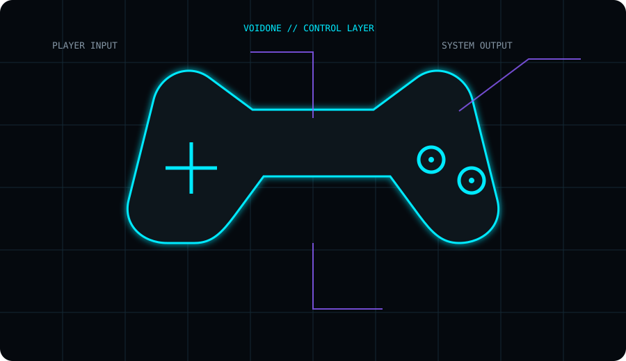
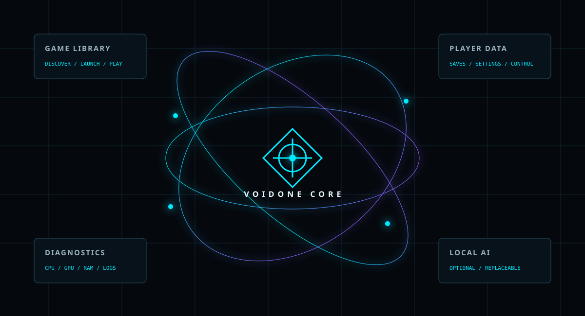

V
One layer around your games.
Library, launching, saves and diagnostics connected without forcing the player into a storefront-first workflow.
VoidOne is a native PC gaming platform built from a gamer's point of view. Your library, your saves, your machine, your data — without turning the experience into another storefront.

01 / THE EXPERIENCE
VoidOne starts with one question: what if the software around your games actually served you?

Library, launching, saves and diagnostics connected without forcing the player into a storefront-first workflow.
Your games stay the center of the interface.
Local-first storage and save control by design.
No ads deciding what deserves your attention.
02 / PLAYER LOADOUT
The current VoidOne codebase is built around useful things a PC gamer does before, during and after launching a game.
A native library-first home for the games you already have.
PLAYER SYSTEMDiscover installed Steam games and executable paths.
DISCOVERYKeep important saves under your local control.
LOCAL DATAWhen a game or environment misbehaves, inspect the system.
DEBUG MODETranslation infrastructure with RTL/LTR-aware UI support.
PLAYER ACCESSA focused launcher layer designed around the player's local machine.
ENGINEERING03 / VOIDONE INTELLIGENCE
AI is a tool, not the owner of your PC. VoidOne keeps intelligence optional and focused — from project help to future player-side capabilities.
PLAYER › What is VoidOne?
VOIDONE › A native gaming platform built by a gamer, for players who want more control.
PLAYER › Cloud required?
VOIDONE › The core philosophy is local-first. AI remains optional.
04 / UNDER THE HOOD
The gamer-facing experience sits on a native engineering stack: C++23, Qt/QML, SQLite and automated testing and release infrastructure.

05 / EVOLUTION
VoidOne evolves in the open — code, releases, experiments and engineering decisions visible to the people who use and build it.
Loading the evolution dataset.
THE ORIGIN
VoidOne started from the player's side.
That perspective is the point: the platform should adapt to the player, not the other way around.
Read the project story →PLAYER PRINCIPLE // FINAL
Native. Open. Local-first. Built by a gamer.